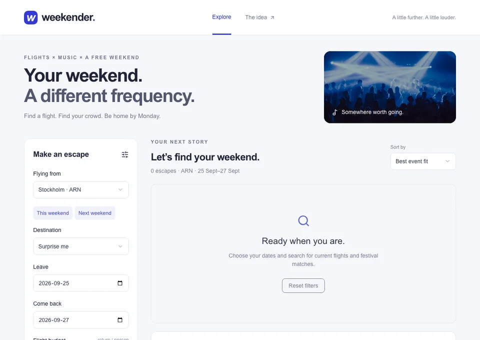
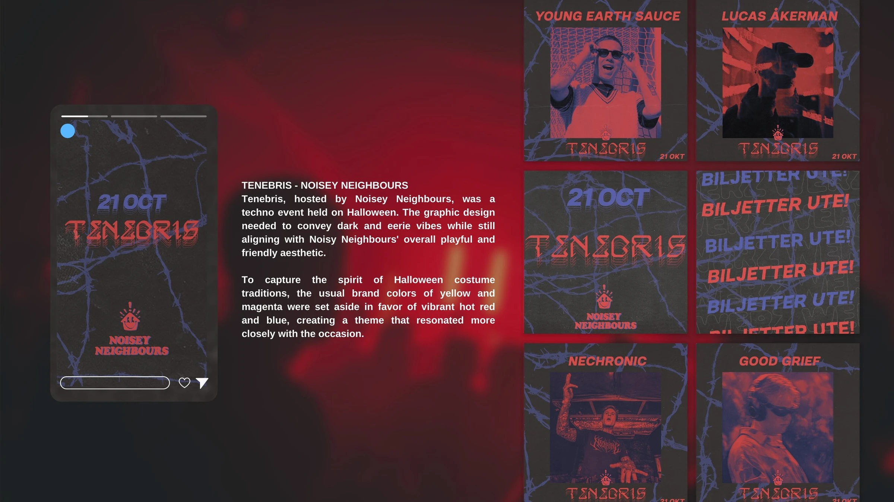
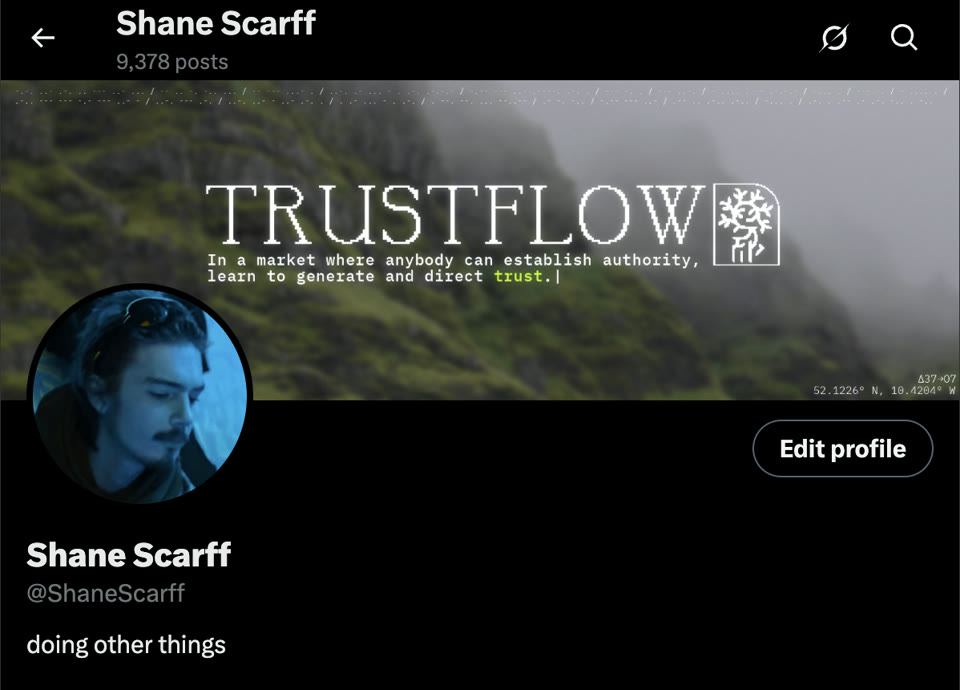
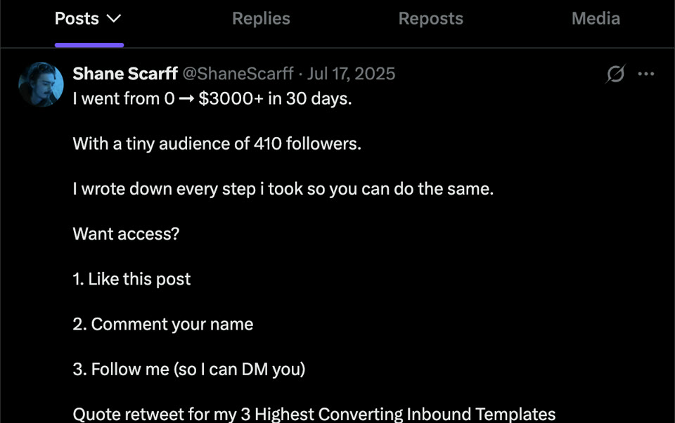
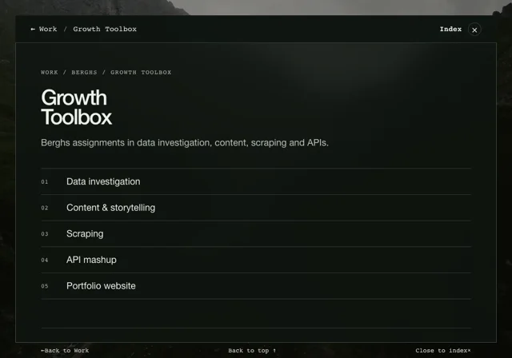

Agoos Apparel
Clothing & print
From art direction to running the brand: clothes, screen printing and everything around them.
Enter projectWork
Clothing & print
From art direction to running the brand: clothes, screen printing and everything around them.
Enter project
Flights meet festivals
Last-minute flights, music festivals and a reason to go. A working API-powered discovery tool.
Enter project
Stockholm rave collective
800 kilos of speakers became a collective. Brand, music and the operation behind the nights.
Enter project
Strategy & coaching
Seven months helping people build and monetise personal brands on X.
Enter project
Research, voice & sales
Writing X content for three clients. Their work stays private; the post shown here is mine.
Enter project
Music release campaign
One visual world, six weeks and 82 videos. From the first label pitch to the release.
Enter project
Growth experiments
Data investigations, content and API experiments from Berghs.
Enter project